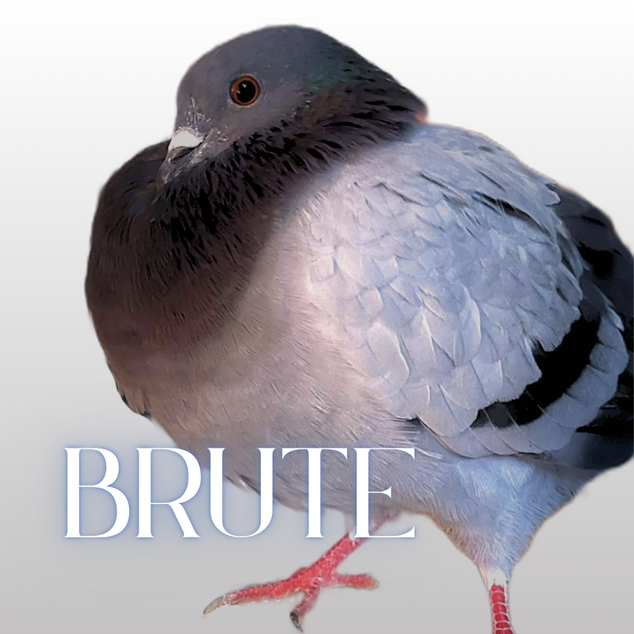

SECOND CHANCE
PIGEON RESCUEBrute
FINAL VET CHECK PENDING (Early June)
Are you looking for a feisty pigeon in your life? Maybe one that has the survival story to show off a little, but can still capture you (or your hen's) heart? Brute could be perfect for you!
Brute is one of those classic blue bar pigeons you'd see on the street. He lived his whole life as a feral bird until January 2025. A concerned citizen saw him struggling to fly, and took him home. Brute came in with a broken wing, but otherwise okay. Initially, we believed Brute couldn't fly, but he quickly proved us wrong when he shot out of his carrier at the vet.
Brute is a very feisty bird. He wing slaps anyone who gets close to him... or his cage. He'll stand his ground for some time before he makes a grand escape, which usually means flying way out of your range and taunting you with a side eye. But around hens? This little dude is ALL the drama. Dancing. Cooing. Fanning his tail. Ready for some loving attention from a hen who wants all of his sass.
- Assumed male; not DNA sexed!
- Brute would likely do well paired with a hen! He may come around to someone who's willing to give him patience.
- Brute needs an indoor only home with accommodations for his difficulty flying.
- Brute has pain in his right wing. He may require ongoing pain medication or be medicated as he ages. He's likely to develop arthritis earlier than some birds and may require ongoing treatment as it develops.
